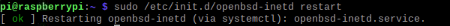

PASO 1
Instalamos Telnet en nuestra raspberrypi

PASO 2
Ejecutamos el servidor Telnet
PASO 3
Comprobamos si el servidor Telnet está ejecutado
PASO 4
Nos conectamos a la raspberrypi con Telnet
PASO 5
Ejecutamos algun comando desde Telnet y analizamos wireshark el trafico de datos